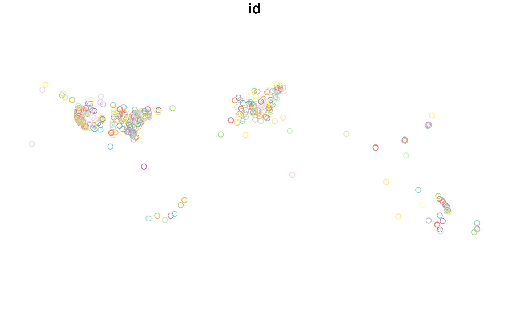

Introduction to tidytransit
Tom Buckley
2021-07-26
Source:vignettes/introduction.Rmd
introduction.RmdInstallation & Dependencies
This package requires a working installation of sf.
# Once sf is installed, you can install from CRAN with:
install.packages('tidytransit')
# For the development version from Github:
# install.packages("devtools")
devtools::install_github("r-transit/tidytransit")For some users, sf is impractical to install due to system level dependencies. For these users, trread may work better. Its tidytransit without geospatial tools.
The General Transit Feed Specification
The summary page for the GTFS standard is a good resource for more information on the standard.
GTFS feeds contain many linked tables about published transit schedules about service schedules, trips, stops, and routes.
Below is a diagram of these relationships and tables:
 Source: Wikimedia, user -stk.
Source: Wikimedia, user -stk.
Read a GTFS Feed
GTFS data come packaged as a zip file of tables in text form. The first thing tidytransit does is consolidate the reading of all those tables into a single R object, which contains a list of the tables in each feed.
Below we use the tidytransit read_gtfs function in order to read a feed from the NYC MTA into R.
We use a feed included in the package in the example below. But note that you can read directly from the New York City Metropolitan Transit Authority, as shown in the commented code below.
You can also read from any other URL. This is useful because there are many sources for GTFS data, and often the best source is transit service providers themselves. See the next section on “Finding More GTFS Feeds” for more sources of feeds.
# nyc <- read_gtfs("http://web.mta.info/developers/data/nyct/subway/google_transit.zip")
local_gtfs_path <- system.file("extdata",
"google_transit_nyc_subway.zip",
package = "tidytransit")
nyc <- read_gtfs(local_gtfs_path)You can use summary to get an overview of the feed.
summary(nyc)## GTFS object
## files agency, stops, routes, trips, stop_times, calendar, calendar_dates, shapes, transfers
## agency MTA New York City Transit
## service from 2018-06-24 to 2018-11-03
## uses stop_times (no frequencies)
## # routes 29
## # trips 19890
## # stop_ids 1503
## # stop_names 380
## # shapes 215Each of the source tables for the GTFS feed is now available in the nyc gtfs object. For example, stops:
head(nyc$stops)## # A tibble: 6 × 10
## stop_id stop_code stop_name stop_desc stop_lat stop_lon zone_id stop_url
## <chr> <chr> <chr> <chr> <dbl> <dbl> <chr> <chr>
## 1 101 "" Van Cortlandt … "" 40.9 -73.9 "" ""
## 2 101N "" Van Cortlandt … "" 40.9 -73.9 "" ""
## 3 101S "" Van Cortlandt … "" 40.9 -73.9 "" ""
## 4 103 "" 238 St "" 40.9 -73.9 "" ""
## 5 103N "" 238 St "" 40.9 -73.9 "" ""
## 6 103S "" 238 St "" 40.9 -73.9 "" ""
## # … with 2 more variables: location_type <int>, parent_station <chr>The tables available on each feed may vary. Below we can simply print the names of all the tables that were read in for this feed. Each of these is a table.
names(nyc)## [1] "trips" "stop_times" "agency" "calendar"
## [5] "calendar_dates" "stops" "routes" "shapes"
## [9] "transfers" "."Feed Validation Results
When reading a feed, it is checked against the GTFS specification, and an attribute is added to the resultant object called validation_result, which is a tibble about the files and fields in the GTFS feed and how they compare to the specification.
You can get this tibble from the metadata about the feed.
## # A tibble: 6 × 8
## file file_spec file_provided_sta… field field_spec field_provided_sta…
## <chr> <chr> <lgl> <chr> <chr> <lgl>
## 1 agency req TRUE agency_id opt TRUE
## 2 agency req TRUE agency_name req TRUE
## 3 agency req TRUE agency_url req TRUE
## 4 agency req TRUE agency_tim… req TRUE
## 5 agency req TRUE agency_lang opt TRUE
## 6 agency req TRUE agency_pho… opt TRUE
## # … with 2 more variables: validation_status <chr>, validation_details <chr>Finding More GTFS Feeds
Included in the tidytransit package is a dataframe with a list of urls, city names, and locations.
You can browse it as a data frame:
head(feedlist)## id t loc_id loc_pid
## 1 prazska-integrovana-doprava/1106 PID GTFS 588 587
## 2 mpk-sa-w-krakowie/1105 MPK SA w Krakowie GTFS 713 434
## 3 mpk-sa-w-krakowie/1104 MPK SA w Krakowie GTFS 713 434
## 4 city-of-kajaani/1103 Kajaani GTFS 712 530
## 5 emtu/1099 EMTU GTFS 666 388
## 6 ctm-cagliari/1098 CTM Cagliari GTFS 710 78
## loc_t loc_n loc_lat loc_lng
## 1 Prague, Czechia Prague 50.07554 14.437800
## 2 Kraków, Poland Kraków 50.06465 19.944980
## 3 Kraków, Poland Kraków 50.06465 19.944980
## 4 Kajaani, Finland Kajaani 64.22218 27.727850
## 5 São Paulo, State of São Paulo, Brazil São Paulo -23.55052 -46.633309
## 6 Cagliari, Province of Cagliari, Italy Cagliari 39.22384 9.121661
## url_i
## 1 https://pid.cz/o-systemu/opendata/
## 2 www.mpk.krakow.pl
## 3 www.mpk.krakow.pl
## 4 http://dev.hsl.fi
## 5 http://www.emtu.sp.gov.br/emtu/home/home.htm
## 6 http://dati.regione.sardegna.it/dataset/quadri-orari-ctm
## url_d
## 1 <NA>
## 2 ftp://ztp.krakow.pl/GTFS_KRK_T.zip
## 3 ftp://ztp.krakow.pl/GTFS_KRK_A.zip
## 4 <NA>
## 5 <NA>
## 6 <NA>Note that there is a url (url_d) for each feed, which can be used to read the feed for a given city into R.
For example:
Included in the transitfeeds table is a set of coordinates for each feed. This means you can filter feed sources by location. Or map all of them, as below:
## Linking to GEOS 3.6.2, GDAL 2.2.3, PROJ 4.9.3
feedlist_sf <- st_as_sf(feedlist,
coords=c("loc_lng","loc_lat"),
crs=4326)
plot(feedlist_sf, max.plot = 1)
See the package reference for the transitfeeds data frame for more information on the transitfeeds metadata.